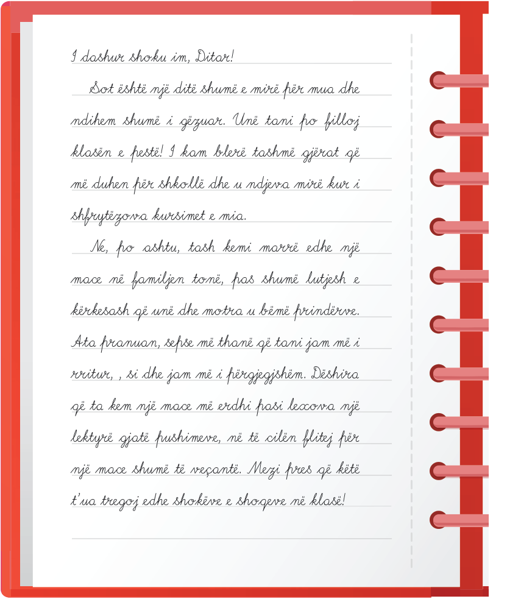

Jam në klasën e pestë.
Çfarë ndryshimesh kam pësuar?
- Unë jam Ari. Jetoj me nënën, babanë dhe motrën. Kam një shok të pandashëm. Ai është ditari im, të cilit ia tregoj të gjitha gjërat çdo ditë. Sapo i tregova që po filloj klasën e pestë.

I dashur shoku im, Ditar!
Sot është një ditë shumë e mirë për mua dhe ndihem shumë i gëzuar.
Unë tani po filloj klasën e pestë!
I kam blerë tashmë gjërat që më duhen për shkollë dhe u ndjeva mirë kur i shfrytëzova kursimet e mia.
Ne, po ashtu, tash kemi marrë edhe një mace në familjen tonë, pas shumë lutjesh e kërkesash që unë dhe motra u bëmë prindërve.
Ata pranuan, sepse më thanë që tani jam më i rritur, , si dhe jam më i përgjegjshëm.
Dëshira që ta kem një mace më erdhi pasi lexova një lektyrë gjatë pushimeve, në të cilën flitej për një mace shumë të veçantë.
Mezi pres që këtë t’ua tregoj edhe shokëve e shoqeve në klasë!
8